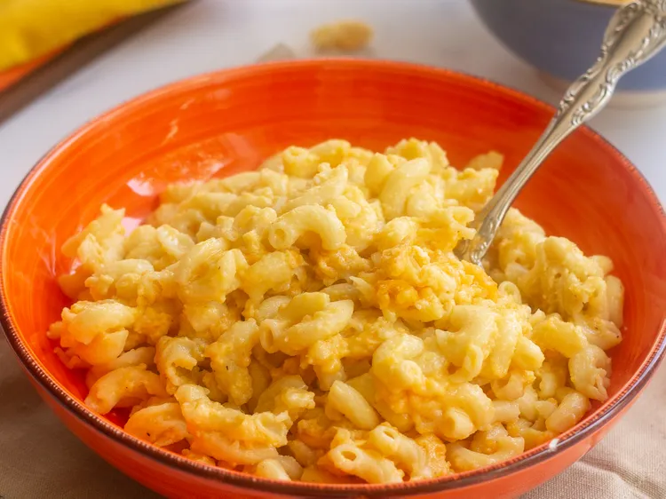

Slow Cooker Mac and Cheese

Ingredients
- Macaroni: This classic mac and cheese recipe starts with a package of elbow macaroni.
- Butter: A stick of butter lends richness and flavor.
- Seasonings: Simply season the macaroni and cheese with salt and pepper.
- Cheese: You’ll need shredded Cheddar cheese for this basic recipe.
- Milk products: The creamy cheese sauce calls for whole milk and evaporated milk.
- Eggs: Up the richness with two beaten eggs.
- Canned soup: A can of condensed Cheddar cheese soup is the budget-friendly secret ingredient:
- Paprika: Ground paprika is optional, but recommended for fans of flavor!
Directions
- Boil the pasta in salted water, then drain and transfer to the slow cooker.
- Stir in the butter, seasonings, and about half of the Cheddar.
- Whisk the evaporated milk and eggs together, then stir into the pasta.
- Whisk the milk and the soup together, then stir into the pasta.
- Sprinkle the remaining cheese over the pasta mixture and garnish with paprika.
- Cook on Low for 2 ½ to 3 hours.
Home